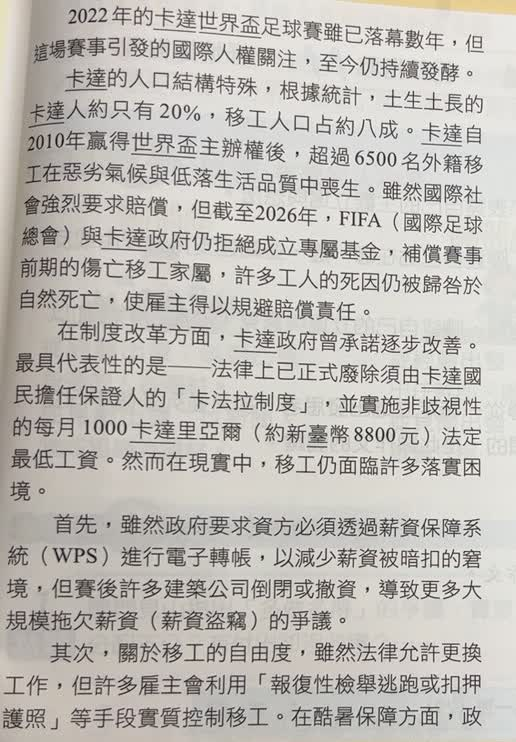
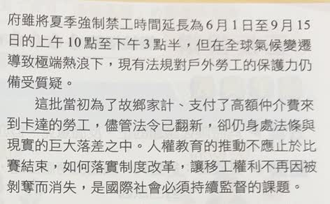

分享原卷｜第 2 題
完整原題
作答所需文章／材料
【世足熱潮下被遺棄的人權】 2022年的卡達世界盃足球賽雖已落幕數年，但這場賽事引發的國際人權關注，至今仍持續發酵。 卡達的人口結構特殊，根據統計，土生土長的卡達人約只有20%，移工人口占約八成。卡達自2010年贏得世界盃主辦權後，超過6500名外籍移工在惡劣氣候與低落生活品質中喪生。雖然國際社會強烈要求賠償，但截至2026年，FIFA（國際足球總會）與卡達政府仍拒絕成立專屬基金，補償賽事前期的傷亡移工家屬；許多工人的死因仍被歸咎於自然死亡，使雇主得以規避賠償責任。 在制度改革方面，卡達政府曾承諾逐步改善。最具代表性的是——法律上已正式廢除須由卡達國民擔任保證人的「卡法拉制度」，並實施非歧視性的每月1000卡達里亞爾（約新臺幣8800元）法定最低工資。然而在現實中，移工仍面臨許多落實困境。 首先，雖然政府要求資方必須透過薪資保障系統（WPS）進行電子轉帳，以減少薪資被暗扣的窘境，但賽後許多建築公司倒閉或撤資，導致更多大規模拖欠薪資（薪資盜竊）的爭議。 其次，關於移工的自由度，雖然法律允許更換工作，但許多雇主會利用「報復性檢舉逃跑或扣押護照」等手段實質控制移工。在酷暑保護方面，政府雖將夏季強制禁工時間延長為6月1日至9月15日的上午10點至下午3點半，但在全球氣候變遷導致極端熱浪下，現有法規對戶外勞工的保護力仍備受質疑。 這批當初為了故鄉家計，支付了高額仲介費來到卡達的勞工，儘管法令已翻新，卻仍身處法律與現實的巨大落差之中。人權教育的推動不應止於比賽結束，如何落實制度改革，讓移工權利不再因被剝奪而消失，是國際社會必須持續監督的課題。依據上文，下列何者並非卡達世足所引起的人權爭議？
(A) 不合理的仲介制度
(B) 被忽視的移工權益
(C) 人身自由遭到限制
(D) 工人死因不予公布
先想一想，再查看答案、解說與原圖
原卷作答：A
正確答案：D。原文說死因被歸咎於自然死亡，以致雇主規避賠償，沒有說死因不予公布；此項換成了另一種問題。
逐項解析
| 選項與原句 | 判讀 | 句意與判斷理由 |
|---|---|---|
| (A) 不合理的仲介制度 | 不選 | 文章明確提到移工為了故鄉家計而支付高額仲介費，可支持仲介制度造成負擔的概括。 |
| (B) 被忽視的移工權益 | 不選 | 文章列出欠薪、惡劣工作環境與保障落差，直接涉及移工權益。 |
| (C) 人身自由遭到限制 | 不選 | 文章提到報復性檢舉逃跑、扣押護照等控制方式，與自由受到限制有關。 |
| (D) 工人死因不予公布 | 應選 | 原文說死因被歸咎於自然死亡，以致雇主規避賠償，沒有說死因不予公布；此項換成了另一種問題。 |
詳細說明與解題步驟
一、先看題目問並非
這題要找不能由文章支持的敘述，不是找最嚴重或最值得關注的人權問題。
二、A、B、C都有文字依據
A對應支付高額仲介費；B對應惡劣工作環境、欠薪與法規落實不足；C對應雇主以檢舉逃跑、扣押護照控制移工。這些都是文章已描述的問題。
三、D把原意換掉了
文章的說法是許多死因仍被歸咎於自然死亡，可能使雇主規避賠償。這與「死因不予公布」不是同一件事。原因被歸為某一類，不等於完全沒有公布，因此D是本題答案。
四、不要把常識印象代替本文
即使對相關新聞有其他認識，本題仍須依文章作答。不能因為死因透明度聽起來也像人權問題，就把文中沒說的內容補進去。原對話中生成漫畫曾錯標答案，本題以實際原卷及上述文意比較為準，未採用錯誤漫畫。
文章的年份、統計與幣值依原卷保留，這裡判斷的是選項是否忠實對應原文。
① 先看清題目問「並非」
要選的是文章未支持的敘述。A的高額仲介費，在本文有依據；不能因制度不合理，就選成「並非」人權爭議。
② B、C也找得到文字依據
欠薪、工作與生活保障不足，對應B的移工權益；報復性檢舉逃跑、扣押護照，則對應C的人身自由受到限制。
③ 比對D有沒有偷換原意
原文是死因被歸咎於自然死亡，可能讓雇主規避賠償。D卻說死因不予公布，改成另一個問題，不能由本文推出。
④ 被歸為自然死亡，不等於不公布死因
答案 D：原文沒有說死因不予公布
- A、B、C都能對應文章中的具體描述。
- 死因被歸成某一類，與完全不公布死因，意思不同。
- 本題依上文作答，不把其他新聞印象補進文章。
核對註記：已核對題幹、全部選項與必要材料；教材對應課次未確認，歸綜合。
原圖（僅本題）

